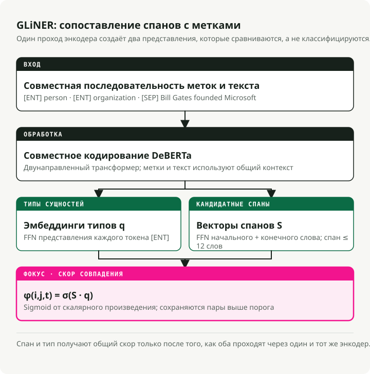
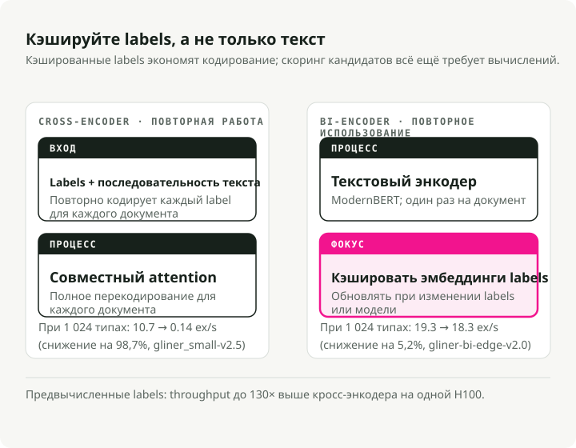
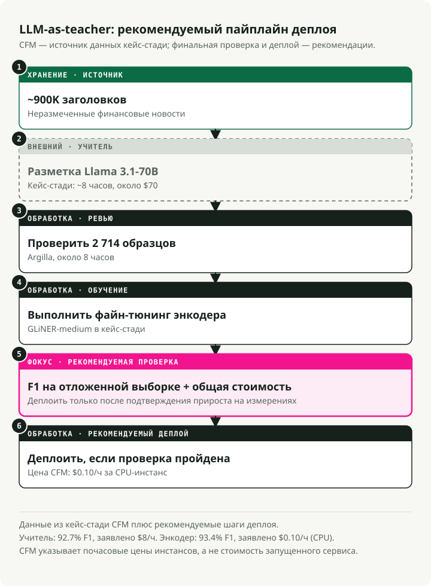
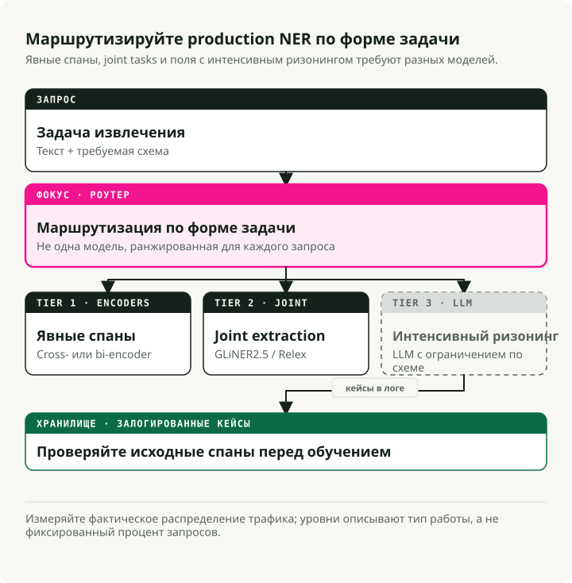

Автоматический перевод
Эта статья была автоматически переведена с оригинальной английской версии.
Полное руководство по NER в 2026 году: кодировщики, LLM и трехуровневая архитектура для производства
Два года назад выбор подхода к решению задач NER означал выбор между скоростью (модели-кодировщики) и точностью (LLM). Такой компромисс больше не существует. Модель GLiNER с 300 миллионами параметров достигает уровня точности zero-shot модели UniNER с 13 миллиардами параметров, при этом работая в 100 раз быстрее. Более новая версия би-кодировщика позволяет обрабатывать миллионы типов сущностей, обеспечивая в 130 раз выше пропускную способность по сравнению с первоначальными кросс-кодировщиками. Сформировавшийся стандарт внедрения заключается в следующем: использовать LLM для маркировки данных, дорабатывать компактные кодировщики и развертывать готовые решения с использованием форматов ONNX или Rust.
Я создал сопутствующий репозиторий, в котором провёл тестирование всех основных подходов. Кодировщики завоевали рынок NER в производственных условиях. LLM по-прежнему играют ключевую роль, но теперь они выполняют функцию генераторов обучающих данных, а не движков инференса. В данном руководстве рассматриваются научные статьи, результаты тестирования и паттерны развертывания, лежащие в основе этого сдвига.
Сопутствующий репозиторий: ner-field-guide — рабочие демо-версии для GLiNER, экспорта в формат ONNX, пайплайна с использованием LLM в качестве учителя и структурированного извлечения данных с помощью Instructor.
Кратко: теперь нет необходимости создавать модели NER с нуля. Для экстракции без предварительной настройки GLiNER на CPU через ONNX превосходит даже самые современные LLM при практически нулевых затратах. Для задач специфических областей пайплайн с LLM в роли инструктора (маркировка LLM → проверка → доработка) позволяет получить кодировщики с показателями F1 от 90 до 93% и выше. В случаях, требующих рассуждений, используйте Instructor или Outlines вместе с API LLM — однако ожидайте затрат около 2 долларов за 1000 документов. Трехуровневая архитектура объединяет все три подхода.
NER по-прежнему означает то же самое: выявление именованных фрагментов в тексте и их классификация. Изменилось лишь место его применения. Раньше это был последний этап в пайплайне обработки естественного языка — незаметный инструмент, о котором никто не писал в блогах. Теперь же он стал основным компонентом систем типа RAG, циклов действий агентов и платформ для обработки документов. Именно поэтому волна исследований NER в период 2024–2026 годов имеет значение не только с точки зрения академических критериев оценки.
RAG: Улучшенный поиск благодаря извлечению сущностей
Стандартный подход RAG — разбиение текста на фрагменты, включение их в векторное пространство, поиск по сходству и надежда на лучшее результат — терпит неудачу, когда пользователи запрашивают информацию о конкретных сущностях. Если кто-то спросит: «Что сказала компания Anthropic о безопасности моделей в 4-м квартале 2024 года?», системе необходимо распознавать «Anthropic» и «4-й квартал 2024 года» как фильтры, а не полагаться исключительно на сходство эмбеддингов.
Во время индексации вы извлекаете сущности из каждого фрагмента данных и сохраняете их в виде метаданных: {"organizations": ["Anthropic"], "dates": ["Q4 2024"], ...}. Это позволяет фильтровать данные по сущностям ещё до запуска векторного поиска. Технологии типа Knowledge Graph RAG (GraphRAG, свойственные графы LlamaIndex) идут дальше: методы NER в сочетании с извлечением связей формируют граф, способный отвечать на вопросы с несколькими промежуточными шагами, чего не могут простые векторные представления.
Во время обработки запроса сущности, извлечённые из вопроса пользователя, определяют маршрут обработки. Вопрос, содержащий название компании, направляется в финансовый индекс; вопрос с названиями лекарств — в клиническую базу знаний. Здесь GLiNER проявляет высокую эффективность, поскольку сущности в запросах бывают непредсказуемыми — невозможно переобучать модель для каждого нового типа сущностей, о которых могут спросить пользователи.
ИИ-агенты: преобразование текста в структурированные факты
Агенты получают неструктурированный текст — веб-страницы, ответы API, сообщения пользователей — и должны принимать по нему действия. НМР преобразует этот текст в структурированные факты, с помощью которых агент может осуществлять логические выводы, хранить информацию или передавать её инструментам.
Самое большое значение это имеет в двух аспектах.
Первый — это маршрутизация инструментов. Когда пользователь говорит: «Запланируйте встречу с Сарой Чен из Accenture на четверг в 14:00», агенту необходимо извлечь PERSON: Sarah Chen, ORGANIZATION: Accenture, и DATETIME: Thursday 2pm до вызова API календаря. Модель NER с кодирователем выполняет эту операцию за менее чем 10 мс. LLM добавляет 1–2 секунды на каждый вызов, и эта задержка накапливается в многоэтапных рабочих процессах, пока агент, который раньше казался «мгновенным», перестает им быть.
Вторая проблема — отслеживание сущностей в ходе разговоров. Системам памяти агентов необходимо понимать, что «Сара» в третьем этапе и «г-жа Чен» в двенадцатом этапе — это один и тот же человек. NER выявляет соответствующие фрагменты текста; связывание сущностей приводит к их привязке к одному идентификатору.
В обоих случаях ограничением является задержка. Вызов модели NER с временем обработки 200 мс в рамках цепочки из 10 шагов добавляет 2 секунды к воспринимаемой задержке. Именно поэтому модели с кодирователем, а не методы извлечения на основе LLM, являются оптимальным выбором для работы с сущностями внутри циклов агентов.
Интеллект документов: от изображений к структурированным данным
OCR преобразует изображения в текст. NER преобразует текст в структурированные поля. Вместе они обеспечивают масштабную дигитализацию документов.
Стандартная цепочка обработки: сначала выполняется OCR (Tesseract, Azure Document Intelligence, AWS Textract) для получения текста и информации о границах прямоугольников, а затем применяется NER для извлечения структурированных полей. invoice_number, vendor_name, line_items, total, due_date — из JPEG-изображения бумажного счёта. Тот же подход применим к контрактам, медицинским картам и документам, предназначенным для соблюдения нормативных требований.
Современные платформы объединяют три этапа: понимание структуры (является ли это заголовком или ячейкой таблицы?), извлечение сущностей (какого типа является этот текст?) и извлечение связей (какие значения относятся друг к другу?). GLiNER 2 обрабатывает все три аспекта за один проход; один вызов модели может вернуть {vendor: "Acme Corp", amount: "\$4,200", due_date: "2026-04-15"} из счёта-фактуры.
Именно здесь проявляется значимость затрат. Среднего размера бухгалтерская фирма обрабатывает десятки тысяч счетов в месяц. Обработка каждого из них с помощью большой языковой модели, даже такой экономичной, как GPT-5.4 Nano, обходится в сотни долларов в день. В то же время использование настроенной модели GLiNER на процессоре стоит всего несколько центов. Ваш финансовый директор обязательно заметит эту разницу. Путь реализации: аннотирование 500 образцов счетов с помощью LLM, дальнейшая настройка модели GLiNER на основе полученных данных и развертывание на процессоре по стоимости 0,10 доллара в час.
Обнаружение персональных данных и ограничения от LLM
Требования к законодательству в области конфиденциальности (GDPR, HIPAA, CCPA) предусматривают необходимость выявления персональных данных до того, как они попадут в последующие системы. В случае использования LLM это означает сканирование входных данных перед их передачей в модель, а также выходных данных перед их доставкой пользователю.
Модуль NER обрабатывает это напрямую. Модели деидентификации находят PERSON, SSN, PHONE, EMAIL, ADDRESS span-элементы следует либо удалить, либо заменить на фиктивные аналоги. Клинические модели John Snow Labs Достигнут показатель 96% F1 в обнаружении PHI (против 91% у Azure, 83% у AWS и 79% у GPT-4o) при обработке более 100 тыс. клинических записей в день.
Что касается механизмов контроля за действиями ЯИ, то NER выполняет роль предварительного слоя фильтрации: он сканирует ввод пользователя на наличие PII перед отправкой данных во внешний API, после чего блокирует или анонимизирует такую информацию. Этот подход быстрее и проще, чем просить сам ЯИ осуществлять саморегулирование. GLiNER особенно полезен в этом контексте, поскольку категории PII различаются в зависимости от юрисдикции. Можно добавлять новые типы сущностей, например «генетическая информация», в соответствии с новыми нормативами, без необходимости переобучения модели.
GLiNER меняет подход к реализации NER с помощью модели с 300 млн параметров
GLiNER (NAACL 2024, Zaratiana и др.) сделал метод NER, основанный на энкодере, конкурентоспособным по сравнению с ЯИ при значительно меньших затратах. Вместо того чтобы рассматривать NER как задачу маркировки последовательностей или генерации текста, GLiNER рассматривает её как задачу сопоставления: он оценивает каждый возможный фрагмент текста (каждую непрерывную последовательность слов, такую как «Bill Gates» или «Microsoft») по отношению к каждой метке типа сущности, после чего сохраняет пары с наивыскими оценками.
Модель принимает метки типов сущностей и входный текст в виде единой последовательности: [ENT] person [ENT] organization [ENT] date [SEP] Bill Gates founded Microsoft.... Двунаправленный трансформер (DeBERTa-v3) кодирует всё вместе.
На основе результата модель формирует два набора представлений: один для типов сущностей (из [ENT] позиций токенов), а также один для интервалов текста (путем объединения векторов начала и конца токенов с помощью небольшой FFN). Скалярное произведение между представлением интервала и представлением типа сущности даёт соответствующий балл.
Применение функции сигмода позволяет получить вероятность того, что интервал от токена \(i\) до токена \(j\) принадлежит к типу сущности \(t\): \(\phi(i, j, t) = \sigma(S_{ij}^T \cdot q_t)\), где \(S_{ij}\) — это вектор интервала, сгенерированный FFN, а \(q_t\) — эмбеддинг типа сущности из соответствующего [ENT] токенЗаратиана и др., 2024, Равнение 1). Длина токенов ограничивается 12 токенами, чтобы обеспечить высокую скорость обработки.

На практике это означает, что любое описание на естественном языке может служить меткой во время инференса. Переобучение не требуется. Вы указываете любые типы сущностей, которые нужны («человек», «побочная реакция на лекарство», «финансовый инструмент»), и модель оценивает соответствующие интервалы данным типам. Доступны три версии: GLiNER-S (50 млн параметров), GLiNER-M (90 млн) и GLiNER-L (300 млн). Данные для обучения взяты из набора Pile-NER: 44 889 текстовых фрагментов с 240 тыс. интервалов сущностей по 13 тыс. типов сущностей, все из которых промаркированы ChatGPT. Обучение GLiNER-L занимает примерно 4 часа на одной карте A100.Заратиана и др., 2024). Заратиана и др. (2024)Таблицы 1 и 2:
| Модель | Параметры | CrossNER F1-метрика | Среднее значение (20 наборов данных) |
|---|---|---|---|
| GLiNER-L | 300 млн | 60.9% | 47.8% |
| GoLLIE | 7B | 58.0% | -- |
| UniNER-13B | 13 млрд | 55.6% | -- |
| GLiNER-M | 90 млн | 55.4% | -- |
| UniNER-7B | 7B | 53.7% | 45.7% |
| GLiNER-S | 50 млн | 52.7% | -- |
| ChatGPT (GPT-3.5) | -- | 47.5% | 36.5% |
Модель GLiNER-M с 90 миллионами параметров почти сопоставима с UniNER-13B (55,4% против 55,6% по показателю F1), при этом её размер в 140 раз меньше. Даже небольшая версия GLiNER-S с 50 миллионами параметров обгоняет ChatGPT (GPT-3.5) на 5 пунктов по F1. Мультиязычная версия, обученная исключительно на английских данных, превосходит ChatGPT в 8 из 10 языков, отличных от английского.Заратиана и др., 2024). Примечание: более новые ЯИИ (GPT-5.4, Claude 4.6) скорее всего показывают более высокие результаты на этих тестовых площадках, однако разрыв в стоимости только увеличивается — эти модели по-прежнему в несколько раз дороже, чем кодер с объёмом 90 млн параметров, работающий на процессоре. quickstart.py:
from gliner import GLiNER
model = GLiNER.from_pretrained("urchade/gliner_medium-v2.1")
text = "Bill Gates founded Microsoft on April 4, 1975."
labels = ["person", "organization", "date"]
entities = model.predict_entities(text, labels, threshold=0.5)
for entity in entities:
print(f" {entity['text']} => {entity['label']} ({entity['score']:.3f})")
# Bill Gates => person (0.987)
# Microsoft => organization (0.991)
# April 4, 1975 => date (0.974)
Как GLiNER сравнивается со spaCy
Любой руководство по NER будет неполным без spaCy — Около 21 млн загрузок в месяц, и одна из самых надёжных библиотек NLP в промышленном использовании. Однако она решает другую задачу, чем GLiNER.
пайплайны spaCyen_core_web_sm, en_core_web_trf) выполняется NER с замкнутым словарем: фиксированный набор типов сущностей (PERSON, ORG, GPE, DATE и т. д.), определяемый во время обучения. Нужен новый тип сущности? Соберите маркированные данные и переобучите модель. Модель основана на трансформере. en_core_web_trf количества запросов 89,8% F1 на OntoNotes 5.0, но только для своих 18 заранее определённых типов.
GLiNER поддерживает распознавание с открытым словарём: во время инференса можно использовать любые метки, без необходимости переобучения. Это делает его лучшим выбором, когда типы сущностей неизвестны заранее, часто меняются или являются специфичными для определённой области («побочная реакция лекарства», «финансовый инструмент», «показатель угрозы»).
Моя рекомендация: используйте spaCy для стандартных типов сущностей, где предзагруженные пайплайны хорошо проверены. Используйте GLiNER, когда вам нужны гибкие типы без предварительного обучения или когда ваш пайплайн должен адаптироваться без переобучения. Они хорошо работают вместе — spaCy отвечает за токенизацию и разбиение предложений, а GLiNER — за извлечение сущностей.
UniNER и NuNER: Насколько маленьким может быть модель?
UniNER (ICLR 2024, Zhou et al.) и NuNER (EMNLP 2024, Bogdanov et al.) оба преобразуют аннотации, полученные с помощью больших языковых моделей, в более компактные модели распознавания сущностей — однако они расходятся во мнении относительно того, насколько маленькими эти модели могут быть.
UniNER: Путь максимализма
UniNER проходит тонкую настройку на основе модели LLaMA-7B/13B с использованием 44 889 пар для задачи NER (240 тыс. сущностей и 13 тыс. типов), сгенерированных ChatGPT. Для каждого типа сущности модель отвечает на вопрос «Что описывает [тип] в тексте?» и выводит списки в формате JSON. Один из ключевых приёмов обучения — отрицательное выборочное обучение на основе частоты, которое позволяет повысить показатель F1 с 31,5 % до 53,4 %.Чжоу и др., 2024UniNER-7B показывает результат 41,7% F1 в режиме zero-shot на 43 наборах данных — что на 7 пунктов выше, чем у ChatGPT с его 34,9%. Вариант объемом 13 миллиардов параметров достигает показателя 43,4%, превосходя предыдущий вариант всего на 1,7 пункта при почти вдвое больших вычислительных затратах.Чжоу и др., 2024Проблемы в промышленном использовании: в качестве 7B-модели с авторегрессивным подходом UniNER требует выполнения N итераций по каждому из N типов сущностей, для чего нужно 14 ГБ и более видеопамяти (что означает, что бюджет на GPU уже исчерпывается ещё до обеда), к тому же он сопровождается строгой лицензией CC BY-NC 4.0.
NuNER: Минималистичный подход
NuNER начинается с модели RoBERTa-base (125 млн параметров) и использует метод контрастного обучения с 4,38 миллиона аннотаций GPT-3.5, охватывающих 200 тысяч концепций — общая стоимость аннотаций составляет менее $500. После завершения обучения кодер концепций удаляется; кодер текста может быть вставлен в любую стандартную пайплайн NER в качестве замены RoBERTa.Богданов и др., 2024Результаты показывают, что NuNER превосходит обычную версию RoBERTa на 6–15 пунктов по метрике F1 при всех размерах наборов данных с ограниченным количеством примеров. При использовании всего лишь десятка примеров на каждый тип сущности NuNER демонстрирует такие же результаты, как UniNER-7B, несмотря на то, что его размер в 56 раз меньше.Богданов и др., 2024).
Оба исследования показывают одно и то же: сжатие аннотаций больших языковых моделей до более компактных структур позволяет получить системы распознавания имён сущностей, превосходящие по качеству оригинальные модели-«учителя». При этом не требуется 7 миллиардов параметров — достаточно 125 миллионов, особенно при наличии данных для финтунинга, причём такая модель работает под лицензией MIT и эффективно выполняет вычисления на процессорах.Заратиана и др., 2025).Заратиана и др., 2025).
from gliner2 import GLiNER2
extractor = GLiNER2.from_pretrained("fastino/gliner2-base-v1")
# Multi-task composition in ONE forward pass
schema = (extractor.create_schema()
.entities({"person": "Names of people", "company": "Organization names"})
.classification("sentiment", ["positive", "negative", "neutral"])
.relations(["works_for", "founded", "located_in"])
.structure("product_info")
.field("name", dtype="str")
.field("price", dtype="str"))
results = extractor.extract(text, schema)
Одна развернутая модель заменяет четыре. Проще инфраструктура, конкурентоспособная точность.
Двухканальный кодер: масштабирование до NER с миллионами меток
Исходная версия GLiNER кодирует метки и текст одновременно, что создаёт узкое место в процессе обработки. Увеличение количества типов сущностей приводит к удлинению последовательности входных данных, и производительность резко снижается при более чем 30 типах. Двухканальный кодер GLiNER (февраль 2026 г., Stepanov и др.; arXiv 2602.18487) решает эту проблему путём разделения процессов кодирования текста и меток на два отдельных трансформера.

Энкодер текста использует ModernBERT (семейство Ettin), а энкодер меток — модели Sentence Transformers (BGE или MiniLM). Оценка диапазонов и меток осуществляется с помощью скалярного произведения. Секрет заключается в том, что эмбеддинги типов сущностей можно предварительно вычислить один раз и сохранить в кэше. Во время инференса необходимо кодировать только текст — поиск меток происходит мгновенно.
Доступны четыре размера моделей, все из которых протестированы на базе задачи CrossNER.Степанов и др., 2026Таблица 1):
| Модель | Параметры | CrossNER F1-метрика | Пропускная способность (H100) | С предварительно вычисленными метками |
|---|---|---|---|---|
| bi-edge-v2.0 | 60 млн | 54.0% | 13,64 экс/с | 24,62 экс/с |
| bi-small-v2.0 | 108 млн | 57.2% | 7,99 экз/сек | 15,22 экс/с |
| bi-base-v2.0 | 194 млн | 60.3% | 5,91 экс/с | 9,51 экс/с |
| bi-large-v2.0 | 530 млн | 61.5% | 2,68 экс/с | 3,60 экс/с |
При использовании 1 024 типов сущностей би-кодер (с предварительными вычислениями) теряет всего 5,2 % пропускной способности по сравнению с одной меткой. Кросс-кодер же теряет 98,7 % пропускной способности (от 10,7 до 0,14 экс/с). Это дает в 130 раз большее преимущество в пропускной способности при масштабировании. При наличии 100 типов сущностей на одном устройстве H100 би-кодер обрабатывает 1,96 миллиона прогнозов в день, тогда как кросс-кодер — лишь 368 тыс.Степанов и др., 2026).Степанов и др., 2026).
from gliner import GLiNER
model = GLiNER.from_pretrained("knowledgator/gliner-bi-base-v2.0")
# Pre-compute embeddings for massive label sets — encode once, use forever
entity_types = ["person", "organization", "date"] # Can be thousands or millions
entity_embeddings = model.encode_labels(entity_types, batch_size=8)
# Inference only encodes text — labels are a cached lookup
outputs = model.batch_predict_with_embeds(texts, entity_embeddings, entity_types)
Среди применений — биомедицинская обработка естественного языка с использованием онтологии UMLS (более 4 млн концептов), корпоративные таксономии, которые обновляются без необходимости переобучения моделей, а также связывание сущностей с помощью вспомогательных инструментов. GLiNKER фреймворк.
ГЛМ как преподаватели: конвейер стоимостью 70 долларов, превосходящий модель по цене 8 долларов в час
Паттерн использования LLM в роли преподавателя стал стандартной частью производственных пайплайнов. Три исследования показывают, каковы затраты на его применение и какие результаты можно получить.

Исследование случая CFM
Компания Capital Fund Management извлекла названия компаний из примерно 900 тысяч заголовков финансовых новостей. Модель Zero-shot GLiNER показала результат 87,0% по метрике F1. Для аннотации всего набора данных они использовали модель Llama 3.1-70b (самую мощную открытую модель на тот момент), что заняло примерно 8 часов и обошлось примерно в 70 долларов; затем ещё 8 часов ушло на ручную проверку 2 714 образцов с помощью инструмента Argilla.
После доработки модели GLiNER на этих данных её производительность выросла до 93,4% по метрике F1 — что превзошло даже показатель базовой модели Llama 70b, составлявший 92,7%. Доработанная модель работает со скоростью 0,10 доллара в час на CPU, тогда как базовая модель стоит 8 долларов в час — то есть она в 80 раз дешевле при более высокой точности.Пример анализа случая использования CFM). Сегодня вы можете получить ещё более качественные аннотации от учителей с использованием Llama 4 Maverick или GPT-5.4 Mini по схожей или даже более низкой стоимости.
Исследование Refuel AI
Компания Refuel AI провела тестирование возможностей маркировки текстов большими языковыми моделями на 8 наборах данных в области обработки естественного языка, включая CoNLL-2003. GPT-4 (март 2023 г.) показал степень согласованности 88,4% по сравнению с эталонными данными — что превышает показатель 86,2%, достигаемый квалифицированными человеческими аннотаторами. Работа больших языковых моделей происходит в 20 раз быстрее и стоит в 7 раз дешевле. Благодаря подходу объединения моделей — использованию дешёвых моделей для простых примеров и GPT-4 для сложных — была достигнута степень согласованности 95% и выше при одновременном снижении затрат.Технический отчет по проекту Refuel AI). С появлением GPT-5.4 и Claude 4.6 качество работы учителей систем продолжает совершенствоваться.
Tonic.ai Clinical NER
Tonic.ai показал, что данная схема эффективна и для клинической NER. Одни лишь аннотации, сгенерированные с помощью LLM, позволили обучить модель RoBERTa LoRA до значения F1 0.70 на корпусе NCBI Disease Corpus (против 0.81 при использовании полных аннотаций, сделанных людьми). При извлечении идентификаторов в медицинских данных было достигнуто значение F1 0.947 — что превышает производственный порог в 0.914 — при отсутствии любых данных с аннотациями от людей.
Стандартная цепочка обработки
В производственной среде была утверждена шестиступенчатая процедура:
- Написание руководства по аннотированию на естественном языке
- Создание небольшого набора данных для проверки, аннотированного людьми (50–200 документов)
- Использование LLM (GPT-5.4 Mini, Llama 4 Maverick или Qwen3.5) для аннотирования больших объёмов обучающих данных
- Проверка подмножества данных Глина или Label Studio
- Тонкая настройка компактного кодера (GLiNER, Маркер области, RoBERTa)
- Развертывание при затратах на инференс на уровне 16–80 раз ниже
Затраты на NER больше не связаны с необходимостью «аннотировать весь обучающий набор, наняв целую армию студентов бакалавриата». Теперь достаточно «создать качественный набор для проверки, составить четкие руководства и позволить большой языковой модели справиться со всем остальным».
Где терпит неудачу GLiNER и почему LLM остаются необходимыми
The Тестовая база данных Sease (Октябрь 2025 г.) была проведена тестирование GLiNER против GPT-4.1-mini на 30 задачах анализа запросов. GPT-4.1-mini дал 100% полностью правильных ответов. GLiNER показал результат 53% (16 из 30). Однако время реакции GLiNER составило 0,08 секунд, в то время как у LLM — 1,21 секунды, что на 15 раз быстрее.
GLiNER не справляется с тремя конкретными типами паттернов:
- Косвенные сущности: извлечение термина «event» из фразы «Elton John performed at Madison Square Garden» — в тексте буквально не указано слово «event», но большая языковая модель выводит значение «концерт».
- Чувствительность формулировок меток: значение для «2022» составляет 0,388 при использовании метки «date», но достигает 0,958 при метке «year» — незначительные изменения меток приводят к существенным колебаниям оценок.
- Сопоставление значений: инструмент GLiNER возвращает точный исходный текст («family houses») вместо стандартного значения («Single family house») — большие языковые модели делают это естественным образом.
Вложенные и перекрывающиеся сущности
GLiNER также плохо справляется с вложенными сущностями. В выражении «New York University» человек может пометить как «New York» (МЕСТОПОЛОЖЕНИЕ), так и «New York University» (ОРГАНИЗАЦИЯ). GLiNER выбирает только тот фрагмент, у которого самая высокая оценка. Это имеет значение в биомедицинских текстах («acute myeloid leukemia» включает как название заболевания, так и его модификатор) и в юридических документах (вложенные иерархии организаций). Специализированные модели умеют обрабатывать вложенность, но конструкция GLiNER, основанная на одноуровневых фрагментах, этого не позволяет.
На практике: GLiNER эффективно справляется с явной экстракцией сущностей — основой работы систем NER в производстве. Большие языковые модели применяются тогда, когда экстракция требует инференции, логических рассуждений или сопоставления с заранее определёнными онтологиями. Целесообразно использовать оба подхода.
Оценка систем NER: метрики, подводные камни и создание тестовых наборов
Я видел, как команды выпускали модели с коэффициентом F1 95% на своих тестовых наборах, которые терпели неудачу в реальных условиях использования из-за того, что тестовый набор не отражал реальное распределение документов. Ваш тестовый набор — это не данные производства. Такая проблема встречается настолько часто, что её необходимо учитывать заранее.
Основные метрики
- F1 на уровне сущностей: стандартная метрика. Прогноз считается верным только в том случае, если границы фрагментов и их тип полностью совпадают с истинными данными. Именно этот показатель приводится в большинстве научных статей.
- F1 на уровне токенов: оценивает каждый токен отдельно. Это приводит к завышению результатов, поскольку правильное определение большей части длинной сущности приносит частичные баллы. Предпочтительнее использовать F1 на уровне сущностей.
- Точность против воспроизводимости: зачастую эти показатели имеют асимметричные издержки. При деидентификации важнее воспроизводимость — упущение имени хуже, чем чрезмерная обработка данных. При извлечении информации из баз данных важнее точность — ложные записи портят последующий анализ.
Распространённые ошибки оценки
- Завышение за частичное совпадение: извлечение «Bill», когда истинный меткой является «Bill Gates» — некоторые скрипты считают это частичным совпадением. Используйте точное совпадение фрагментов, если у вас нет причин этого не делать.
- Путаница с типами: корректное определение «Microsoft» как фрагмента, но пометка PERSON вместо ORG должна приводить к нулевому баллу. Убедитесь, что ваш код оценки учитывает этот случай. 3 Утечка данных из тестового набора: если тестовые сущности пересекаются с сущностями обучения, баллы завышаются. Для проверки универсальности существуют бенчмарки без предварительного обучения (CrossNER, Few-NERD).
Создание тестового набора для конкретной области
Для оценки в производственных условиях я рекомендую:
- Образцы из реальных производственных данных, а не отобранные примеры. Необходимо включить «грязные» документы, с которыми фактически столкнётся ваша модель.
- От 200 до 500 аннотированных документов обеспечивают стабильные оценки показателя F1. При количестве менее 100 интервалы доверия становятся слишком широкими.
- Минимум два аннотатора с уровнем согласованности между ними (Cohen’s kappa > 0.8). Если люди приходят к разным выводам, ваша модель не сможет показать лучшие результаты.
- Стратификация по уровню сложности — простые случаи (чистый текст, стандартные типы) и сложные случаи (неоднозначные сущности, жаргон, «шумный» текст). модели деидентификации достиг 96% по показателю F1 (против 91% у Azure, 83% у AWS и 79% у GPT-4o), при этом Провиденс Сент-Джозеф Хелθ обрабатывает от 100 тысяч до 500 тысяч клинических записей ежедневно. Открытый исходный код Проект OpenMed Предлагает более 380 моделей для распознавания элементов в биомедицинских текстах, набравших 29,7 млн загрузок на платформе HuggingFace; они устанавливают новые рекорды качества на 10 из 12 публичных тестовых наборов в области биомедицины.
Распознавание элементов в финансовых текстах
Основной сценарий применения: извлечение данных из документов, подаваемых в Комиссию по ценным бумагам и биржам. Система Finance NLP от John Snow Labs позволяет извлекать более 11 типов сущностей из отчетов 10-K/10-Q — адреса, тикеры, финансовые годы, биржи ценных бумаг и т. д. FinBERT-MRC Варианты моделей достигают значения F1 от 0,87 до 0,93 при обработке задач на распознавание финансовых субъектов. Основная сложность заключается в больших объемах документов и вложенных сущностях в сложных финансовых инструментах.
Электронная коммерция
Распознавание имён сущностей в масштабах огромных данных. У Walmart’s Система EAMT (KDD 2023): обучение на 965 миллионах запросов с примерно 60 метками сущностей, что позволило достичь роста 0,51% GMV в тестах типа A/B — что эквивалентно миллионам дополнительных доходов. У компании Home Depot TripleLearn фреймворк (AAAI 2021) позволил повысить показатель F1 для задачи NER с 69,5 до 93,3 благодаря итеративной обучающей процедуре. система iACE (CCS 2016) обработал 71 000 статей с 45 блогов по вопросам безопасности, извлек 900 тыс. элементов IOC при точности 98% и воспроизводимости 93%. Современные системы подобного рода CyNER Сочетать DeBERTa (F1 >91%) с эвристиками IOC, основанными на регулярных выражениях. The CyberNER Единый набор данных (2025) объединяет четыре набора данных в 21 тип сущности, соответствующий стандарту STIX 2.1; при использовании модели RoBERTa значение коэффициента F1 составляет 0.736.
Оптимизация развертывания: от Python до вывода результатов за доли миллисекунды
В сопутствующем репозитории я протестировал три способа ускорения работы модели GLiNER в производственных условиях.
Экспорт в формат ONNX
GLiNER поддерживает нативную конвертацию в формат ONNX, причём готовые к использованию модели уже доступны на HuggingFace.onnx-community/gliner_small-v2.1). ONNX Runtime обеспечивает ускорение в 1,5–3 раза по сравнению с PyTorch на процессорах, предлагая четыре уровня оптимизации — от базового до работы с смешанной точностью. onnx_export.py:
# Export with quantization
# python convert_to_onnx.py --model_path model/ --save_path onnx/ --quantize True
# Load ONNX model — same API, faster inference
from gliner import GLiNER
model = GLiNER.from_pretrained("path/to/model", load_onnx_model=True)
# Same predict_entities call, 1.5-3x faster on CPU
entities = model.predict_entities(text, labels, threshold=0.5)
Квантование INT8
Динамическое квантование позволяет сократить размер моделей в 2,4 раза (с 438 МБ до 181 МБ) при потере качества, эквивалентной менее 0,6% по метрике F1. Скорость обработки на CPU увеличивается в 1,8 раза. На процессорах Intel VNNI с использованием ONNX Runtime скорость работы в режиме INT8 может быть в 6 раз выше, чем у моделей PyTorch в формате FP32.
from onnxruntime.quantization import quantize_dynamic, QuantType
# One-line quantization — 2.4x smaller, <1% F1 loss
quantize_dynamic("gliner.onnx", "gliner_int8.onnx", weight_type=QuantType.QInt8)
gline-rs: Переопределение на Rust
gline-rs (Apache 2.0) устраняет дополнительную нагрузку, связанную с использованием Python. На процессоре: 6.67 последовательностей/сек против 1.61 у Python — что соответствует ускорению в 4.1 раза. На карте RTX 4080: 248.75 последовательностей/сек.тесты производительности gline-rs). Он поддерживает модели типа span и token, работу с GPU/NPU через ONNX Runtime, а также доступен в виде пакета на crates.io.
use gliner::{GLiNER, TokenMode, Parameters, RuntimeParameters, TextInput};
let model = GLiNER::<TokenMode>::new(
Parameters::default(), RuntimeParameters::default(),
"tokenizer.json", "model.onnx")?;
let input = TextInput::from_str(
&["My name is James Bond."], &["person", "vehicle"])?;
let output = model.inference(input)?;
// => "James Bond" : "person" (99.7%)
\n fast-gliner Этот пакет предоставляет биндинги на Python с использованием PyO3 — скорость Rust в сочетании с удобством использования Python.
Краткое описание стека оптимизации
| Оптимизация | Ускорение по сравнению с PyTorch | Размер модели | F1 Impact | Лучше всего подходит для |
|---|---|---|---|---|
| ONNX Runtime | 1,5–3 раза | То же самое | Нет | Быстрое решение — любое оборудование |
| Квантование в формате INT8 | 3–6 раз | 2,4 раза меньше | Потери составляют 0,6%. | Развертывание ЦП с ограниченным объёмом памяти |
| 4.1x (ЦП) | Формат ONNX | Нет | Высокопроизводительные системы с критически низкой задержкой передачи данных | |
| gline-rs + формат INT8 | 4–8 раз | 2,4 раза меньше | Потери 1% | Производство в крупном масштабе |
Структурированное извлечение: инструкторский материал против оглавления
Когда требуется большая гибкость, чем позволяют модели-кодеры — такая как работа с неявными сущностями, рассуждения и маппинг онтологий — две библиотеки обеспечивают структурированный извлечение информации из LLM.
Преподаватель (~12 600 звёзд на GitHub, ~8,8 млн загрузок в месяц по состоянию на март 2026 года) — проект Jason Liu позволяет обновлять SDK для больших языковых моделей таким образом, чтобы они поддерживали модели ответов Pydantic, а также обеспечивает автоматическую попытку повтора при неудачной валидации. Он поддерживает более 15 поставщиков данных и послужил основой для реализации функции структурированного вывода в самом OpenAI. structured_extraction.py:
import instructor
from pydantic import BaseModel
from typing import List, Literal
from openai import OpenAI
class Entity(BaseModel):
name: str
label: Literal["PERSON", "ORGANIZATION", "LOCATION"]
class ExtractEntities(BaseModel):
entities: List[Entity]
client = instructor.from_openai(OpenAI())
result = client.chat.completions.create(
model="gpt-5.4-mini", temperature=0.0,
response_model=ExtractEntities,
messages=[{"role": "user", "content": "BioNTech SE acquired InstaDeep in the U.K."}])
# entities=[Entity(name='BioNTech SE', label='ORGANIZATION'), ...]
Основные положения (~13 600 звёзд на GitHub) проект dottxt использует иной подход: ограниченную генерацию токенов с помощью конечных автоматов. Вместо генерации вывода и повторных попыток при неудачной валидации инструмент Outlines полностью предотвращает создание недопустимых токенов — это обеспечивает 100 % соответствие схеме без необходимости в повторных попытках. тесты производительности AWS Отображается уровень соблюдения схемы 98%, в то время как при валидации после генерации показатель составляет 76%; кроме того, скорость генерации в 5 раз выше по сравнению с процессом без ограничений при повторных попытках валидации после генерации.
import outlines
model = outlines.models.transformers("microsoft/Phi-3-mini-128k-instruct")
generator = outlines.generate.json(model, ExtractEntities)
result = generator("Extract entities from: BioNTech SE acquired InstaDeep in the U.K.")
Выбор зависит от того, где вы запускаете свои модели. Instructor — лучший вариант для облачных API больших языковых моделей: он позволяет быстро создавать прототипы, поддерживает несколько поставщиков сервисов и использует знакомые шаблоны Pydantic. Outlines предпочтительнее при работе с локальными моделями, когда требуются гарантии формата без внешних зависимостей. Оба решения хорошо справляются с задачами извлечения информации в стиле NER, однако ни одно из них не может сравниться по скорости с энкодерами: Instructor добавляет задержку API в размере 200 мс–2 секунд на каждый вызов, а Outlines зависит от скорости работы локальной модели. Для задач с высокой пропускной способностью в области NER энкодеры всё равно быстрее в 10–100 раз.

Уровень 1 — Модели кодировщиков для известных типов сущностей. GLiNER (кросс-кодировщик для <30 типов, би-кодировщик для 30+ типов), настроенный с помощью подхода LLM-as-teacher. Реализуется с использованием форматов ONNX + INT8 или gline-rs. Обрабатывает более 90% объёма данных с задержкой менее 50 мс и практически нулевыми затратами. Би-кодировщик способен масштабироваться до миллионов типов сущностей благодаря заранее вычисленным эмбеддингам.
Уровень 2 — GLiNER 2 для многозадачной экстракции. Когда один запрос требует выполнения задач NER, классификации, экстракции связей и формирования структурированных данных, модель GLiNER 2 с 205 миллионами параметров заменяет четыре отдельных решения. Она работает на процессоре со скоростью обработки от 130 до 208 мс независимо от количества меток — что идеально подходит для пайплайнов обработки документов, требующих выполнения нескольких задач экстракции за один проход.
Уровень 3 — LLM для извлечения данных с высокой нагрузкой на рассуждения. Когда сущности неявны, требуется контекстуальное выводирование информации или маппинг в онтологию, запрос направляется к LLM (GPT-5.4 Mini, Claude Sonnet 4.6, Llama 4 Maverick) через интерфейс Instructor (облачная версия) или Outlines (локальная версия). Это позволяет обработать около 10% запросов, которые не удается обработать обычными кодерами. Те же самые LLM используются также для генерации данных для обучения на уровне 1.
Сколько это стоит? Тонконастроенный модель GLiNER достигает показателя F1 в 93,4% при стоимости 0,10 доллара в час на процессоре, что сопоставимо с показателем F1 в 92,7% у модели Llama-70b в качестве учителя при стоимости 8 долларов в час — то есть в 80 раз дешевле.
Компромиссы и ограничения
У систем машинного обучения всегда существуют компромиссы. Важный вопрос заключается в том, где проявляются эти компромиссы и можно ли оценить их до развертывания.
Ошибки учителя-LLM передаются дальше. Если LLM постоянно ошибается с определенным типом сущности (например, путает названия дочерних компаний с названиями материнских компаний), тонконастроенный кодер унаследует эту предвзятость. Решением является целенаправленный человеческий аудит — необходимо сосредоточить усилия на типах сущностей, где уверенность LLM низкая или нестабильная, а не на случайном выборке.
Потери при квантизации неодинаковы. Средняя потеря показателя F1 в 0,6% при использовании формата INT8 может быть больше для редких типов сущностей с тонкими границами (химические соединения, многословные аббревиатуры). Всегда проводите тестирование квантизированных моделей на конкретных типах сущностей, а не просто используйте средний показатель F1.
Когда трехуровневая архитектура избыточна. Одна область применения, четко определённые типы сущностей, более 500 меченых примеров? Для таких случаев достаточно тонко настроенной модели RoBERTa или пайплайна spaCy — это проще и эффективнее. Трехуровневая структура оправдана лишь в ситуациях (а) наличия нескольких областей применения, (б) постоянной эволюции типов сущностей или (в) сочетания задач лёгкой и сложной экстракции. Если нужно извлекать только имена и даты из счётов-фактур, достаточно первого уровня.
Предел качества би-энкодера. Би-энкодер жертвует возможностью совместного учёта контекста ради высокой скорости обработки. Когда семантика меток взаимодействует с текстовым контекстом (например, для одного и того же фрагмента текста используются термины «дата», «год» и «период»), кросс-энкодер остаётся более эффективным решением. Используйте кросс-энкодер для задач с высокой значимостью и небольшим количеством меток; би-энкодер — для более широкого спектра задач.
Основные выводы
- Энкодеры победили. Варианты GLiNER и би-энкодеров превосходят LLM в стандартных тестах NER при затратах на 80–130 раз ниже. Даже с учетом снижения стоимости за счет GPT-5.4 Nano и Llama 4, запуск LLM для каждого запроса по NER больше не оправдан.
- LLM остаются необходимыми — в роли инструкторов. Они маркируют данные для обучения за 70 долларов, что в случае ручной аннотации обошлось бы в тысячи долларов, причем тонко настроенный энкодер как правило превосходит тот самый LLM, который его обучал.
- Би-энкодер позволяет работать с миллионами меток. Заранее вычисленные эмбеддинги решают проблему квадратичной сложности, при этом потеря производительности составляет всего 5,2% при 1 024 метках.
- GLiNER 2 объединяет многозадачную экстракцию. Один модель размером 205 млн параметров для NER + классификации + RE + структурированной экстракции.
- Оценивайте на собственных данных. Используйте показатель F1 на уровне сущностей, формируйте тестовые наборы из реальных документов и тестируйте квантизированные модели для конкретных типов сущностей.
-
Используйте гибридный подход. Уровень 1/2 — для быстрой экстракции, уровень 3 — для рассуждений. Те же самые LLM, которые обрабатывают самые сложные 10% задач, генерируют данные для обучения оставшихся 90%.
-
GLiNER: универсальная модель для распознавания именованных сущностей на основе двунаправленных трансформеров - Zaratiana и др., NAACL 2024. Основная архитектура сопоставления интервалов и сущностей. GLiNER 2: Нерешённые проблемы в области автоматической извлечения информации - Zaratiana и др., EMNLP 2025: Демонстрации систем. Объединяет задачи NER, классификации, RE и структурированного извлечения данных. GLiNER Bi-Encoder: масштабируемое распознавание именованных сущностей с использованием архитектуры двойного кодировщика - Степанов и др., февраль 2026 г. Декуплированная кодировка для масштаба в миллионы меток. UniNER: универсальная система NER, основанная на больших языковых моделях - Zhou и др., ICLR 2024. Универсальный NER на основе LLM с использованием метода дистилляции из ChatGPT. NuNER: предобучение кодера для распознавания сущностей с использованием данных с аннотациями от LLM - Bogdanov и др., EMNLP 2024. Показано, что 125 млн параметров достаточны при использовании данных для обучения, сгенерированных большими языковыми моделями.
Статьи из индустрии
- EAMT: многозадачное обучение с учётом структуры сущностей для понимания запросов - Walmart, KDD 2023. 965 млн запросов, рост общей стоимости заказов на 0,51%. TripleLearn: концепция терминального обучения для задач распознавания имён сущностей в системах поиска электронной коммерции - Home Depot, AAAI 2021. Значение F1 увеличилось с 69,5 до 93,3. iACE: автоматический сбор информации о киберугрозах - CCS 2016: 71 тыс. статей, 900 тыс. IOC. CyberNER: Унифицированный корпус STIX для задач распознавания элементов в контексте кибербезопасности - 21 типа сущностей, соответствующих стандарту STIX 2.1. FinBERT-MRC: Распознавание элементов финансовой информации с помощью машинного понимания текста - Значение F1 на задачах с финансовыми субъектами — от 0,87 до 0,93.
Кейсы исследований
- Кейс-студия CFM: тонкая настройка модели GLiNER для распознавания элементов финансовой информации - Пайплайн маркировки LLM от Capital Fund Management стоимостью 70 долларов, обеспечивающий показатель F1 в 93,4%. Refuel AI: Технический отчет по маркировке больших языковых моделей - GPT-4 достигает уровня согласованности аннотаций 88,4%, что превышает показатели человеческих аннотаторов. Sease: GLiNER как альтернатива LLM для парсинга запросов - Ситуации, в которых GLiNER терпит неудачу и по-прежнему требуются большие языковые модели. John Snow Labs: критерий оценки деидентификации медицинских текстов - Сравнение показателей обнаружения F1 PHI между различными поставщиками: 96%. OpenMed: Обзор года 2025 - Более 380 моделей для распознавания элементов в биомедицинском тексте, 29,7 млн загрузок с HuggingFace.
Инструменты и фреймворки
- репозиторий демонстрации ner-field-guide - Демо-версии, дополняющие эту статью: быстрый старт с GLiNER, экспорт в формат ONNX, использование LLM в качестве учителя и структурированный извлечение данных. gline-rs: реализация GLiNER на языке Rust - Ускорение работы на 4,1 раза по сравнению с Python; лицензия Apache 2.0. Преподаватель - Извлечение структурированных данных из LLM с использованием моделей Pydantic; примерно 8,8 млн загрузок в месяц. Основные положения - Генерация токенов с ограничениями с использованием автоматов состояний, обеспечивающая соблюдение схемы. AWS: структурированный вывод с оглавлением - показатель соблюдения схемы — 98%.